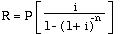

This section consists not of a single example, but of a number of related ones. It culminates in a program to compute mortgage amortizations, but includes discussions of a number of topics closely related to that kind of problem.
Find the amount owing on $1000 at 6% compounded annually for 10 years.
Since at each step of the computation the current amount owed can be computed as A = 1.06A, this could be solved in Modula-2 with a loop:
amount := 1000.0;
numYears := 10;
year := 1;
WHILE year <= numYears
DO
amount := amount * (1.0 + intRate)
END;
Note, however, that this loop can be replaced with a closed formula, for what has been computed by it is just A(1 + rate)years. Using a function developed earlier, the Modula-2 code becomes:
The compound interest formula is At=A0(1+r)t where At is the amount after t years, A0 is the original principal, r is the annual rate and t is the number of years. If interest is compounding more often than annually, let n be the number of times per year and replace r by r/n and t by n*t to get At=A0(1+r/n)nt
amount := amount * APowerB (1.0 + intRate, numYears);
Alternately, the function procedure power could be imported from RealMath (or a similar procedure from a non-standard library) and this line written:
amount := amount * power (1.0 + intRate, numYears);
For the figures given in the original question, this yields $1790.85
Suppose a fixed amount is deposited into a compound interest bearing account each year. How much will there be in the account after a number of years?
Since at each step of the computation the current amount on deposit can be computed as amount = amount(1 + rate) + payment, this could be solved in Modula-2 with the loop:
year := 1;
amount := payment;
WHILE year <= numYears
DO
amount := payment + amount * (1.0 + intRate)
INC (year);
END;
This is a little harder to express in a closed form. It is a sum with two parts--the periodic interest, and the periodic addition to the account. The individual sum can be thought of as a sequence of partial sums: (R = payment, i = rate)
RThe discussion on replacing loops with closed forms in section 3.8 included ways of finding partial sums of arithmetic sequences, but the one here is of a different kind. It has the form:
a1, a1r, a1r2, a1r3, ... , a1rn-1
which is called a geometric sequence. (Each term is a fixed multiple of the one before.) In this particular instance, the first term of the sequence is the payment and each subsequent term that is added to this is (payment(1 + intRate)n-1).
A sequence a1, a2, a3, ... is called geometric provided that each term is a fixed multiple of the preceding term. The fixed multiplier so used is called the common ratio of the sequence.
The partial sums of geometric sequences can be found in a manner similar to that employed for arithmetic sequences. One writes down the product of the partial sum with r, then writes down the partial sum underneath, and subtracts.
| rSn | = | a1r + a1r2 + a1r3 + ... + a1rn-2 + a1rn-1 | + a1rn |
| -Sn | = a1 + | a1r + a1r2 + a1r3 + ... + a1rn-2 + a1rn-1 | |
| (r-1)Sn | = -a1 | + a1rn | |
which is to say that, for geometric sequences in general:
Applying this with the payment R and the common ratio r set to 1 + i as it is in the problem under discussion produces:
or,
This bracketed factor is called the series compound interest factor, and provides a closed formula for the amount of money on deposit at a given time. The amount A calculated by this formula is also known as the future value of the deposit. In Modula-2:
futureValue := payment * (power (rate + 1.0, numYears) - 1.0) / rate
What amount must be deposited into a compound interest bearing account each year in order to accumulate a fixed amount in the account after a number of years?
The last formula above can also be solved for R to learn how much must be deposited at each time period to obtain a certain fixed total amount. The part of the formula in brackets is called the sinking fund factor and is just the reciprocal of the series compound interest factor. The amount computed is called the size of the annuity.
Compute the monthly payments that can be made out of an interest bearing account that starts with a fixed sum and is to be emptied.
This is also called the present value of an annuity, and is the amount equal to a series of future payments. The most common use of such funds is to provide retirement fixed monthly payment out of a fund generated from contributions before retirement. However, this process also describes the way in which mortgage or other loan amounts are paid off. At each time period, interest is applied, and a payment is subtracted from the balance until nothing is left owing on the loan.
Suppose the principal amount of the loan or annuity is P. If this money were placed at compound interest for n years, it would become an amount A = P(1 + i)n. Thus, P = A(1 + i)-n can be thought of as the present value of some amount A. If this present value P is accumulated by regular payments (either paid in or paid out,) it is a sum of the kind mentioned above, so that:
P = Sn(1 + i)-n
or, substituting the compound interest factor from above for the accumulation Sn
and then simplifying, one obtains:
The expression in brackets is called the series present worth factor and the amount calculated here is the present worth or present value of the series of payments. This in turn means that the payments required to empty the annuity account (or to pay off the loan, as the case may be) can be computed by solving this last formula for R, obtaining:

The part in brackets, which is the reciprocal of the series present worth factor, is called the capital recovery factor. This last formula may be used to compute mortgage payments and then print an amortization table as in the following:
Write a program to print loan amortization tables.
The material presented here was originally written by a student. It was then edited and reorganized to fit the problem solving outline used in this text. In the process, it was shortened by about 25%.
See the discussion above. The problem requires that complex and repetitive computations be performed and is ideal for computer solution.
Given a principal, annual interest rate, and number of months for payback on a loan, calculate the monthly payment required to pay off the loan within the designated time. The user will be able to specify the month and the year in which the first payment will be made. Print out a payment schedule showing, month by month, the payment, the amount applied to the interest, the amount applied to the principal, and the new balance. Upon completion of printing, the user will be able to run the program again or terminate.
The opening credits, waiting for a keypress, request and validation of the starting month and year, the computation of the monthly payment required, the rounding off of dollar amounts to the nearest cent, and the printing of the amortization table can all be factored out as subtasks. Some of these are further refined as follows:
1. Amortize will print an informative heading and instructions.
2. Amortize will obtain from the user the following data:
a. The principal of the loan
b. The annual interest rate of the loan
c. The number of months for payback on the loan
d. The month in which the first payment on the loan will be made
e. The year in which the first payment on the loan will be made
3. Amortize will compute the monthly payment necessary using:
4. Amortize will print a schedule listing, month by month:
a. the payment
b. the amount applied to the interest
c. the amount applied to the principal, and
d. the new balance.
4.1 In order to do this, the month and (possibly) the year must be incremented accordingly. The amount applied to the interest is based on a percentage (the monthly interest rate) of the current balance. The amount applied to the principal, therefore, is the payment minus the amount applied to the interest. The balance is the current value of the balance minus the amount applied to the principal.
4.2. The final payment on the loan has to be adjusted so that the balance is $0.00. Therefore, the amount applied to the interest must be calculated first, and then added to the monthly payment.
4.3 All amounts will be rounded to the nearest cent in an effort to avoid an accumulation of round-off errors.
5. When Amortize has finished listing the payment schedule, it gives the user the option of running another calculation again or terminating.
1. Split the real number provided into two parts - dollars and cents. 2. Round off the cents by multiplying by 100 and truncating. 3. Recombine the two parts and return the result. NOTE: Rounding is done this way so as to avoid multiplying the entire number by 100 before truncating it, thus severely limiting the size range of numbers that can be rounded off correctly.
1. Each of these prints a prompt asking for the required information about the loan. 2. If the amount is outside reasonable limits, an error message is printed and the user is prompted for the information again. 3. The valid amount is returned.
1. The parameters principal, intRate, and numMonths are passed, and the formula in 3 above is used to do the calculation.
1. PrintOut is passed: firstMonth, firstYear, numOfMonths, payment, intRate, and principal.)
curMonth = startMonth
curYear = startYear
count = 1;
while curMonth <= numOfMonths
Print out curMonth and curYear
If month is December then
Increment curYear
curMonth = January
Otherwise
Increment curMonth
end the if
amountAppliedToInterest = (intRate * principal)
If curMonth = numOfMonths then
payment = principal + amountAppliedToInterest
Print the payment
Print amountAppliedToInterest
amountAppliedToPrincipal = (payment - amountAppliedToInterest)
Print amountAppliedToPrincipal
principal = principal - amountAppliedToPrincipal
Print principal in a right-justified column
end the while
the main program Amortize: principal, intRate, payment : reals numOfMonths, firstMonth, firstYear : cardinals response, cr : chars the procedures HoldScreen, PrintAuthor, PrintOpeningMessage, APowerB none the procedure RoundToCent: dollars, cents : real roundcents : integer the procedure GetPrincipal: princOk : a boolean thePrinc : a real the procedure GetRate: RateOk : a boolean theRate : a real the procedure GetNumMonths: MonthsOk : a boolean theNum : a cardinal the procedure GetStartMonth: month : a cardinal monthOk : a boolean the procedure GetStartYear: year : a cardinal yearOk : a boolean the procedure CalcPayment: payment : a real the procedure PrintOut: lineNumber, count, curMonth, curYear : cardinals interestPaidOff, principalPaidOff : reals
NOTE: For the benefit of students who have traditional versions of Modula-2, this example has been left with the library use employed when it was submitted. One of the exercises will be to convert it into standard Modula-2.
From InOut: WriteLn, WriteString, ReadCard, Done, WriteCard, Write, ReadString From RealIO: WriteReal, ReadReal, Done From MathLib: Exp, Ln
For an input principal of $100.00, an interest rate of 10%, repayment of one month starting September 1991, Amortize will print a chart such as:
Amount Amount
Applied to Applied to
Month Payment Interest Principal Balance
September 1991 $100.83 $ .83 $100.00 $ 0.00
When you first start up the program Amortize, a screen will appear that gives information about Amortize's author and the class for which Amortize was written. Continue by pressing any key.
New information will appear giving basic information about the required input and functions of Amortize. Read this over carefully so you are fully aware of all your options in Amortize. When you have finished reading the text on this screen, press any key.
You now need to type in the principal, annual interest rate, and number of months for payback on your loan. Once you have entered this information, you will then need to specify the month and the year in which the first payment will be made. (Amortize can then print the date and the month of each payment in your schedule). Press any key to continue.
Now you will be presented with a numbered list of the twelve months of the year. Select the number corresponding to the month in which the first payment will be made. Then specify the year in which the first payment will be made.
Amortize will then display, month by month, the payment, the amount applied to the interest, the amount applied to the principal, and the new balance. If there are too many months to fit on one screen, Amortize will pause so you can view each screen at your own leisure. Press any key to continue the listing.
Once Amortize has finished printing your payment schedule, you can run Amortize again or you can quit. Press "y" to run the program again, or hit any other key to terminate Amortize.
Amortize allows principals of up to $500000.00. Specifying a principal that is greater than $500000.00 (or less than $0.01, for obvious reasons) will cause Amortize to print the following error message:
Sorry, but that is an invalid principal. Please specify a principal between $0.01 and $500000.00. Try again here ==>
Amortize will continue to print this error message until a valid principal (between $0.01 and $500000.00 is entered).
Amortize will ask you to enter the ANNUAL INTEREST RATE (not the monthly interest rate) on your loan. You will be required to enter this annual interest rate in decimal form (i.e. entering 6% as 0.06). Specifying the annual interest rate to be less than or equal to 0 or greater than or equal to 1 will cause Amortize to print the following error message:
Sorry, but that is an invalid interest rate. Please specify an interest rate between 0 and 1. Try again here ==>
Amortize will continue to print this error message until a valid annual interest rate (between 0 and 1) is entered.
Amortize assumes 1,000 to be the maximum number of months for payback on a loan. (Since there are 12 months in a year and a person lives an average of 70 years, 1,000 months for payback on a loan is an ample amount of time). Specifying the number of months to be greater than 1,000 (or less than 1, for obvious reasons) will cause Amortize to print the following error message:
Sorry, but that is an invalid number of months. Please specify the number of months to be between 1 and 1,000. Try again here ==>
Amortize will continue to print this error message until a valid number of months (between 1 and 1,000) is entered.
When Amortize asks you to enter the number corresponding to the month in which the first payment will be made, do not type in the name of the month. Failure to specify a number between 1 and 12 will cause the list of months to reappear, and it will continue to do so until a valid selection is made.
Amortize expects you to enter a year between 1985 and 2050. Specifying the year of the first payment to be less than 1985 or greater than 2050 will cause Amortize to print the following error message:
Please specify a year between 1985 and 2050. Try again here ==>
Amortize will continue to print this error message until a valid year (between 1985 and 2050) is entered.
(* Name : Stephanie L. McLeod *)
(* Student Number : 880664 *)
(* Cmpt 360 Programming Languages Fall 1990 *)
(* Assignment #2 : "Amortize" *)
(* Printing Out Payments on a Loan *)
(* edited and revised by R. Sutcliffe 1991 03 28 *)
MODULE Amortize;
IMPORT InOut; (* to use Done from both InOut and RealInOut*)
FROM InOut IMPORT
WriteLn, WriteString, ReadCard, Done, WriteCard, Write, Read;
FROM RealIO IMPORT
WriteReal, ReadReal;
FROM MathLib IMPORT
Exp, Ln;
VAR
principal, intRate, payment : REAL;
numMonths, firstMonth, firstYear : CARDINAL;
response, cr : CHAR;
PROCEDURE HoldScreen; (* called whenever one wants to wait for a keypress *)
BEGIN
WriteString ("Press carriage return to continue ==> ");
Read (cr);
WriteLn;
END HoldScreen;
PROCEDURE PrintAuthor; (* Prints out information about the author *)
BEGIN
WriteString (" *************************************");
WriteLn;
WriteString (" Amortize");
WriteLn;
WriteString (" Was Created By");
WriteLn;
WriteString (" Stephanie L. McLeod, Student # 880664");
WriteLn;
WriteString (" For");
WriteLn;
WriteString (" Cmpt 360, Fall 1990");
WriteLn;
WriteString (" Assignment #2");
WriteLn;
WriteString (" Printing Out Payments on a Loan");
WriteLn;
WriteString (" *************************************");
WriteLn;
WriteLn;
END PrintAuthor;
PROCEDURE PrintOpeningMessage;
(* Informs the user of the input required for Amortize and describes the functions of Amortize*)
BEGIN
WriteString ("Amortize has been designed to print a schedule of ");
WriteString ("monthly payments");
WriteLn;
WriteString ("for your loan. When Amortize first begins, you ");
WriteString ("will be required to");
WriteLn;
WriteString ("enter the principal, the annual rate of interest, ");
WriteString ("and the number ");
WriteLn;
WriteString ("of months for payback on the loan. You will also ");
WriteString ("specify the ");
WriteLn;
WriteString ("month and the year in which the first payment ");
WriteLn;
WriteString ("will be made.");
WriteLn;
WriteLn;
WriteString ("Then Amortize will print a schedule showing, ");
WriteString ("month by month,");
WriteLn;
WriteString ("the payment, the amount applied to the interest, ");
WriteString ("the amount ");
WriteLn;
WriteString ("applied to the principal, and the new balance.");
WriteLn;
HoldScreen;
END PrintOpeningMessage;
PROCEDURE APowerB (a, b : REAL) : REAL;
(* pre: a raised to the b is not greater than MAX (REAL)
post: a raised to the b is returned *)
BEGIN
RETURN Exp (b * Ln (a) )
END APowerB;
PROCEDURE RoundToCent (theAmount : REAL) : REAL;
(* can be used to round off any real number to two decimal places
Pre : theAmount is less than the maximum integer
Post : the number returned is theAmount rounded to two decimal places *)
VAR
dollars, cents : REAL;
roundCents : INTEGER;
BEGIN
dollars := FLOAT (TRUNC (theAmount));
cents := theAmount - dollars;
roundCents := TRUNC (100.0 * (cents + 0.005));
RETURN dollars + (FLOAT (roundCents) / 100.0);
END RoundToCent;
PROCEDURE GetPrincipal (): REAL;
VAR
princOk : BOOLEAN;
thePrinc : REAL;
BEGIN
REPEAT
WriteString ("What is the principal (or amount) of your loan? ==> $ ");
ReadReal (thePrinc);
Read (cr); (* consume line feed *)
princOk := Done AND (thePrinc > 0.00) AND (thePrinc < 500000.00);
IF NOT princOk
THEN
WriteString ("Sorry, but that is an invalid principal.");
WriteLn;
WriteString ("Please specify a principal between $0.01 and ");
WriteString ("$500000.00. Try again here ==> ");
END;
UNTIL princOk;
WriteLn;
RETURN thePrinc;
END GetPrincipal;
PROCEDURE GetRate (): REAL;
VAR
rateOk : BOOLEAN;
theRate : REAL;
BEGIN
REPEAT
WriteString ("What is the annual interest rate on your loan?");
WriteLn;
WriteString ("For example, type in 6% as 0.06 ==> ");
ReadReal (theRate);
Read (cr); (* consume line feed *)
rateOk := Done AND (theRate > 0.0) AND (theRate < 1.0);
IF NOT rateOk
THEN
WriteString ("Sorry, but that is an invalid interest rate.");
WriteLn;
WriteString ("Please specify an interest rate between 0 and 1.");
WriteLn;
END;
UNTIL rateOk;
WriteLn;
RETURN theRate;
END GetRate;
PROCEDURE GetNumMonths (): CARDINAL;
VAR
monthsOk : BOOLEAN;
theNum : CARDINAL;
BEGIN
REPEAT
WriteString ("How many months do you have to pay back the loan?");
WriteLn;
WriteString ("Type in the number of months here ==> ");
ReadCard (theNum);
Read (cr); (* skip linefeed *)
monthsOk := InOut.Done AND (theNum > 0 ) AND (theNum < 1000);
IF NOT monthsOk
THEN
WriteString ("Sorry, but that is an invalid number of months.");
WriteLn;
WriteString ("Please specify the number of months to be ");
WriteString ("between 1 and 1000.");
WriteLn;
END;
UNTIL monthsOk;
WriteLn;
RETURN theNum;
END GetNumMonths;
PROCEDURE GetStartMonth (): CARDINAL;
(* Pre - None
Post - Returns the number of the month for the first payment. *)
VAR
month : CARDINAL;
monthOk : BOOLEAN;
BEGIN
REPEAT (* checks for valid input *)
WriteString ("In which month will the first payment be made? 1 - 12");
WriteLn;
WriteString ("Type in the number of the month here ==> ");
ReadCard (month);
Read (cr); (* skip linefeed *)
monthOk := InOut.Done AND (month >= 1) AND (month <= 12);
IF NOT monthOk
THEN
WriteLn;
WriteString (" 1. January");
WriteLn;
WriteString (" 2. February");
WriteLn;
WriteString (" 3. March");
WriteLn;
WriteString (" 4. April");
WriteLn;
WriteString (" 5. May");
WriteLn;
WriteString (" 6. June");
WriteLn;
WriteString (" 7. July");
WriteLn;
WriteString (" 8. August");
WriteLn;
WriteString (" 9. September");
WriteLn;
WriteString (" 10. October");
WriteLn;
WriteString (" 11. November");
WriteLn;
WriteString (" 12. December");
WriteLn;
WriteLn;
END; (* if *)
UNTIL monthOk;
WriteLn;
RETURN month
END GetStartMonth;
PROCEDURE GetStartYear (): CARDINAL;
(* Pre - None
Post - Returns the year in which the first payment is made *)
VAR
year : CARDINAL;
yearOk : BOOLEAN;
BEGIN
REPEAT
WriteString ("In what year will the first payment be made? ==> ");
ReadCard (year);
Read (cr); (* skip linefeed *)
yearOk := InOut.Done AND (year > 1985) AND (year < 2050);
IF NOT yearOk
THEN
WriteString ("Please specify a year between 1985 and 2050. ");
END;
WriteLn;
UNTIL yearOk;
RETURN year
END GetStartYear;
PROCEDURE CalcPayment (princ, rate : REAL;
numPayments : CARDINAL): REAL;
(* Pre - princ is the principal amount, rate is the monthly interest, numPayments is the number of monthly payments
Post - Returns the monthly payment necessary to pay off the loan rounded to the nearest cent *)
VAR
payment : REAL;
BEGIN
payment := (princ * rate) / (1.0 - (1.0 / APowerB (1.0 + rate, FLOAT(numPayments)) ) );
RETURN RoundToCent (payment);
END CalcPayment;
PROCEDURE PrintOut (startMonth, startYear, numPayments : CARDINAL;
monthlyPay, percentage, princ : REAL);
(* Prints a schedule showing, month by month, the payment, the amount applied to the interest, the amount applied to the principal, and the new balance.
Pre - startMonth, startYear, numPayments, monthlyPay, percentage and princ have all been set up in the main program
Post - none *)
VAR
lineNumber, count, curMonth, curYear : CARDINAL;
interestPaidOff, principalPaidOff : REAL;
BEGIN (* print a title and column headings for the schedule *)
WriteString (" Amount Amount");
WriteLn;
WriteString (" Applied to Applied to");
WriteLn;
WriteString ("Month Payment Interest Principal");
WriteString (" Balance");
WriteLn;
WriteString ("----- ------- -------- ---------");
WriteString (" -------");
WriteLn;
lineNumber := 12; (* print a year at a time *)
(* print the data for each month with appropriate spacing*)
curMonth := startMonth;
curYear := startYear;
count := 1;
WHILE count <= numPayments
DO
IF curMonth = 1
THEN
WriteString ("January ");
ELSIF curMonth = 2 THEN
WriteString ("February ");
ELSIF curMonth = 3 THEN
WriteString ("March ");
ELSIF curMonth = 4 THEN
WriteString ("April ");
ELSIF curMonth = 5 THEN
WriteString ("May ");
ELSIF curMonth = 6 THEN
WriteString ("June ");
ELSIF curMonth = 7 THEN
WriteString ("July ");
ELSIF curMonth = 8 THEN
WriteString ("August ");
ELSIF curMonth = 9 THEN
WriteString ("September ");
ELSIF curMonth = 10 THEN
WriteString ("October ");
ELSIF curMonth = 11 THEN
WriteString ("November ");
ELSIF curMonth = 12 THEN
WriteString ("December ");
END; (* if *)
WriteCard (curYear, 0);
WriteString (" $ ");
interestPaidOff := RoundToCent (princ * percentage);
(* calculate the various amounts for the printout *)
IF count = numPayments (* is final payment? *)
THEN (* adjust last payment for rounding off *)
monthlyPay := RoundToCent (princ + interestPaidOff);
END;
principalPaidOff := RoundToCent (monthlyPay - interestPaidOff);
princ := RoundToCent (princ - principalPaidOff);
(* now do the printout for this month *)
WriteReal (monthlyPay, 7, 2);
WriteString (" $ ");
WriteReal (interestPaidOff, 7, 2);
WriteString (" $ ");
WriteReal (principalPaidOff, 7, 2);
WriteString (" $ ");
WriteReal (princ, 7, 2);
WriteLn; (* done one line *)
IF count = lineNumber (* up to number of lines set? *)
THEN (* yes, so let the person have a look first *)
WriteLn;
HoldScreen;
INC (lineNumber, 12); (* then print another year *)
END; (* if *)
(* now reset the counters for the next round *)
IF curMonth = 12 (* was december this time? *)
THEN
INC (curYear); (* yes, reset to January of next year *)
curMonth := 1
ELSE
INC (curMonth) (* no, so increment month, leave year alone *)
END; (* if *)
INC (count);
END (* while *)
END PrintOut;
BEGIN (*main program *)
PrintAuthor;
PrintOpeningMessage;
REPEAT (* main repeat loop around whole thing *)
principal := GetPrincipal ();
intRate := GetRate()/12.0; (* Obtain & convert to monthly interest rate *)
numMonths := GetNumMonths ();
firstMonth := GetStartMonth ();
firstYear := GetStartYear ();
payment := CalcPayment (principal, intRate, numMonths);
PrintOut (firstMonth, firstYear, numMonths, payment, intRate, principal);
WriteLn;
WriteString ("Would you like to run Amortize again? If so, ");
WriteString ('then type "y".');
WriteLn;
WriteString ("If not, then press any other key to quit ==> ");
Read (response);
Read (cr); (* skip linefeed *)
UNTIL (CAP (response) # "Y")
END Amortize.
*************************************
Amortize
Was Created By
Stephanie L. McLeod, Student # 880664
For
Cmpt 360, Fall 1990
Assignment #2
Printing Out Payments on a Loan
*************************************
Amortize has been designed to print a schedule of monthly payments
for your loan. When Amortize first begins, you will be required to
enter the principal, the annual rate of interest, and the number of months for payback on the loan. You will also specify the month and the year in which the first payment will be made.
Then Amortize will print a schedule showing, month by month,
the payment, the amount applied to the interest, the amount applied to the principal, and the new balance.
Press carriage return to continue ==>
What is the principal (or amount) of your loan? ==> $ 10000.00
What is the annual interest rate on your loan?
For example, type in 6% as 0.06 ==> .085
How many months do you have to pay back the loan?
Type in the number of months here ==> 20
In which month will the first payment be made? 1 - 12
Type in the number of the month here ==> 9
In what year will the first payment be made? ==> 1991
Amount Amount
Applied to Applied to
Month Payment Interest Principal Balance
----- ------- -------- --------- -------
September 1991 $ 538.02 $ 70.83 $ 467.19 $ 9532.81
October 1991 $ 538.02 $ 67.52 $ 470.50 $ 9062.31
November 1991 $ 538.02 $ 64.19 $ 473.83 $ 8588.48
December 1991 $ 538.02 $ 60.84 $ 477.18 $ 8111.30
January 1992 $ 538.02 $ 57.46 $ 480.56 $ 7630.74
February 1992 $ 538.02 $ 54.05 $ 483.97 $ 7146.77
March 1992 $ 538.02 $ 50.62 $ 487.40 $ 6659.37
April 1992 $ 538.02 $ 47.17 $ 490.85 $ 6168.52
May 1992 $ 538.02 $ 43.69 $ 494.33 $ 5674.19
June 1992 $ 538.02 $ 40.19 $ 497.83 $ 5176.36
July 1992 $ 538.02 $ 36.67 $ 501.35 $ 4675.01
August 1992 $ 538.02 $ 33.11 $ 504.91 $ 4170.10
Press carriage return to continue ==>
September 1992 $ 538.02 $ 29.54 $ 508.48 $ 3661.62
October 1992 $ 538.02 $ 25.94 $ 512.08 $ 3149.54
November 1992 $ 538.02 $ 22.31 $ 515.71 $ 2633.83
December 1992 $ 538.02 $ 18.66 $ 519.36 $ 2114.47
January 1993 $ 538.02 $ 14.98 $ 523.04 $ 1591.43
February 1993 $ 538.02 $ 11.27 $ 526.75 $ 1064.68
March 1993 $ 538.02 $ 7.54 $ 530.48 $ 534.20
April 1993 $ 537.98 $ 3.78 $ 534.20 $ .00
Would you like to run Amortize again? If so, then type "y".
If not, then press any other key to quit ==> n